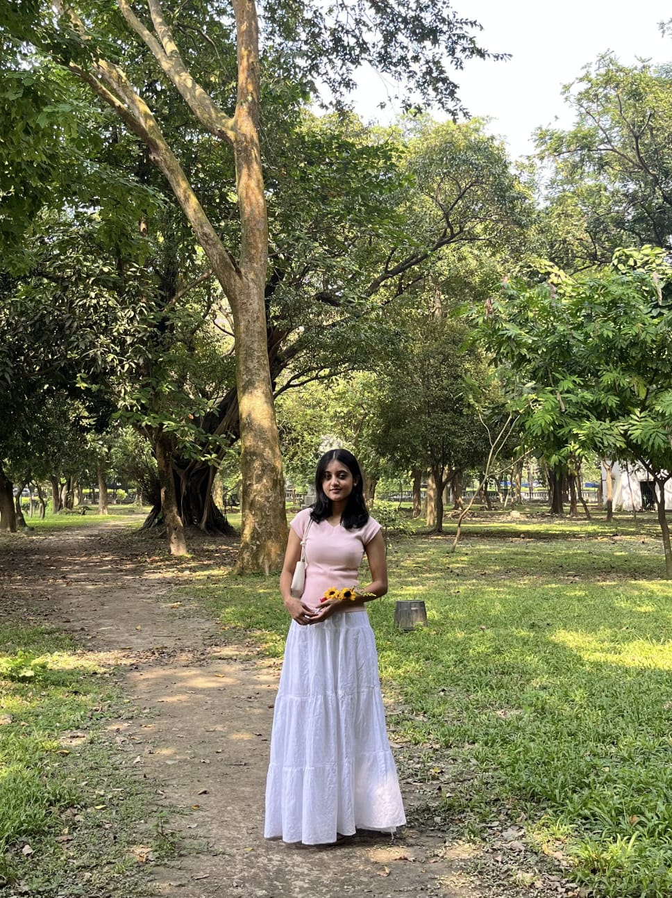

THE CREATOR
"Every design begins with an idea. Every idea begins with curiosity."
About Me
Hello! I'm Kaushiki Sutar, a Computer Science student with a growing passion for front-end web development, elegant user interfaces, and creative digital experiences. I enjoy transforming ideas into clean, modern, and visually engaging websites that combine simplicity with functionality.
Lumina Designs represents one of my first complete web development projects. Through this website, I explored the fundamentals of HTML and CSS while focusing on creating a refined fashion-inspired aesthetic that reflects creativity, attention to detail, and continuous learning.

My Journey
My journey into web development began with a curiosity to understand how modern websites are designed and brought to life. What started with learning the fundamentals of HTML and CSS gradually became an opportunity to create complete and meaningful digital experiences.
Lumina Designs was created as a project to apply those skills in a creative way. Inspired by the elegance of luxury fashion websites, I challenged myself to build a clean, immersive, and visually refined interface while paying attention to structure, typography, and user experience. Every section of this website reflects my growth as a learner and my enthusiasm for front-end development.
Skills & Technologies
Throughout the development of Lumina Designs, I strengthened my understanding of front-end web development and modern design principles. This project reflects my growing technical skills and my passion for creating elegant, user-friendly digital experiences.
- HTML5
- CSS3
- Responsive Web Design
- User Interface (UI) Design
- Visual Design & Typography
A Note of Thanks
Thank you for taking the time to explore Lumina Designs. This project represents an important milestone in my learning journey and reflects my dedication to creativity, continuous improvement, and thoughtful design.
Every page, every detail, and every design choice was created with the intention of delivering a clean and elegant experience. I look forward to learning, growing, and building many more projects in the future.